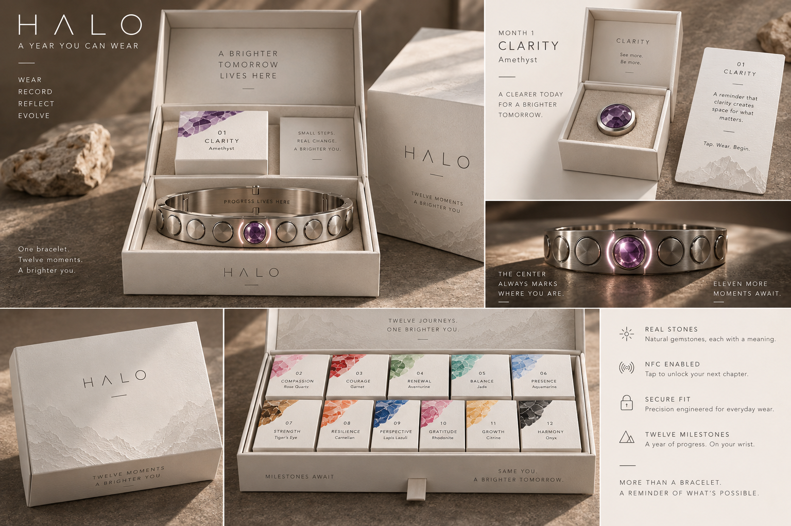
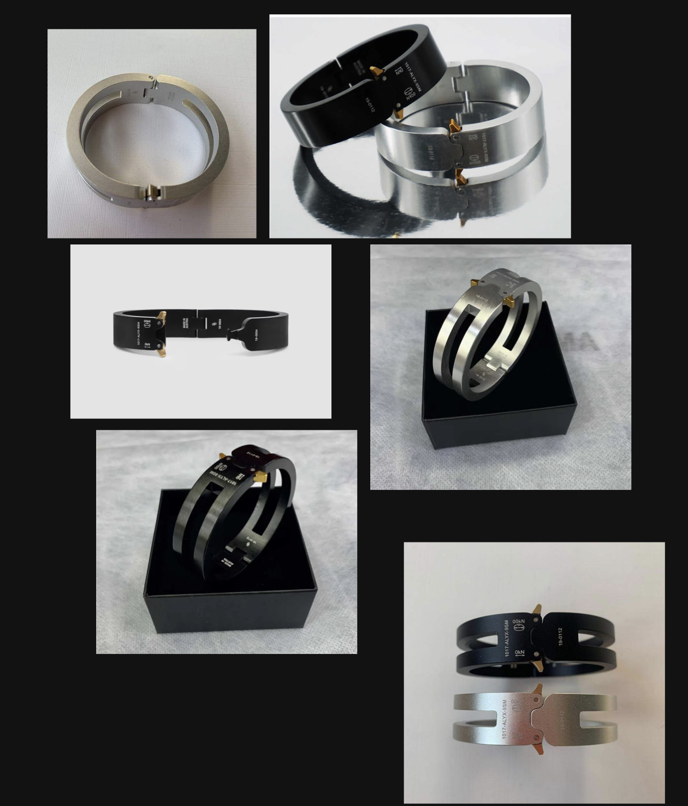

Validate industrial design, wearable fit, the clasp, the stone interface, installed RF and cosmetic finish as distinct questions. Use the sequential P0–P8 gates below.
Read every claim by its evidence state
State
Meaning
DESIGN INTENT
The requested product behavior or appearance. It is a requirement, not proof.
WORKING ASSUMPTION
A provisional planning target or candidate; record its owner and revision.
REQUIRES PROTOTYPE
A technical question with no sufficient physical evidence yet.
SUPPLIER-CONFIRMED
A dated written supplier statement or measured sample report, linked to its scope and revision; not automatically Halo validation.
PHYSICALLY VALIDATED
A documented physical test that passes predeclared criteria for the identified sample, configuration and revision.
No supplier confirmation or physical validation is asserted by the static reference, diagrams or renders. A checklist records work; it does not confer approval. Record actual evidence in the trackers and decision log.
One program / two cosmetic finishes
A rigid jewelry object with a concealed adjustable underside.
The visible/front approximately two-thirds remains a continuous brushed 316L structure containing all 12 stone positions. The rear/underside accommodates the locking and sizing mechanism. Do not convert the visible bracelet into a generic articulated watch band.
Shared architecture
LIGHT
DARK
Identical geometry, dimensions, stone system and clasp/sizing architecture
Brushed natural 316L stainless steel
Brushed black 316L stainless steel; PVD preferred
Identical packaging dielines, typography, graphics, inserts, cards and stone order
Warm white / ivory presentation
Charcoal / near-black presentation
Same S/M and M/L base-chassis exploration
Both finishes offered against the same size definitions
Finish allowance controlled so finished interfaces remain interchangeable
These are finishes, not male/female products. No geometry or mechanism is engineered by gender. Two base sizes are a working concept, not released wrist ranges.
No batteryNo screenNo active lightPassive NFC per removable stone
Earn → Unbox current milestone → Tap / activate → Install → Wear → Repeat
Intended behavior only. The app/server remains authoritative for eligibility; a read alone never grants a milestone.
DESIGN INTENT / conceptual diagrams
Symbolic occupancy, not scaled CAD. Exactly 12 positions per view. The center datum is fixed; the indexing method, pitch and wrist curvature require CAD and physical proof. No automatic carousel or moving upper chassis is implied.
Current means physically centered.
At every stage, the newly earned milestone occupies the primary center-top/front position while previous stones remain installed. Month 1 = centered 01 + 11 blanks. Month 12 = centered 12 + stones 01–11. This replaces the earlier “composition cue” assumption.
P0Industrial designEvidence before the next investment
Freeze approximate proportions, a real center datum and two provisional chassis envelopes; compare underside mechanism volumes.
Exit evidence: Dimensioned mockups, a twelve-position layout study and a recorded candidate comparison.
P1–P2Fit, clasp and adjustmentEvidence before the next investment
Separate wearable fit proof from functional locking and adjustment proof. Explore about 15–20 mm of fine travel per base size.
Exit evidence: Wear observations and measured clasp/adjustment tests; no validated wrist range is assumed.
P3Stone-interface proofEvidence before the next investment
Test dummy modules and blanks, deliberate retention/removal, access and the center-current indexing workflow.
Exit evidence: Measured fits, repeat-cycle results and Month 1→12 placement records.
P4Installed RF proofEvidence before the next investment
Read the same assembly loose, partly integrated and installed in final 316L geometry, including on-wrist and multi-tag configurations.
Exit evidence: Raw intended-identity read counts across agreed phones, poses, distances and module populations.
P5–P6Integrated and cosmetic proofEvidence before the next investment
Build the functional bracelet, then Light/Dark samples with matched geometry and finish allowances.
Exit evidence: Mechanical and RF regression results after assembly and finish; coating, abrasion and exposure samples.
P7–P8Presentation and pilotEvidence before the next investment
Validate common packaging structure in both colorways, then a small traceable build before committing to MOQ.
Exit evidence: Packaging/kitting evidence, pilot yield, defects, repair process and controlled drawings.
Visual references and revision boundaries

DESIGN INTENT: material, stone and presentation reference. H2 text and schematics control architecture where the render is ambiguous. Glow is a lighting effect; no powered illumination. Visible articulation, numbers or labels do not establish construction or performance.
The earlier public packaging-NFC concept remains an unresolved cross-surface discrepancy. H2 develops NFC in each removable stone module; no consumer app/catalog change is made here.
02
HALO hardware / revision H2
Split the supply chain
DESIGN INTENT
Source five specialist responsibilities against one controlled drawing pack. Shared interfaces and final acceptance belong to Halo.
A / Metal chassis
Bracelet / clasp manufacturer
316L machining, stamping or casting as justified by DFM; brushed natural and black PVD finishes; a rigid upper chassis, precision sockets and a concealed adjustable clasp.
Request low-to-medium MOQ prototypes, jewelry-grade tolerance capability, established clasp experience, sample/cycle evidence and finish-process ownership.
B / Calibrated material + module
Stone cutting & module assembly
Cut and identify all twelve stones to a controlled envelope; design the carrier, seat, retention geometry and assembly sequence.
Own calibrated stone dimensions, setting, adhesive/encapsulation, replacement stock and repeatable placement. Coordinate the NFC stack with partner C.
C / Passive identity
NFC / antenna supplier
Supply candidate chips, antennas, isolation and ferrite options plus physical samples for the actual metal environment.
Prove the intended tag identity through the complete installed stack. A loose inlay demonstration does not qualify the product.
D / Shared presentation
Packaging manufacturer
One master presentation with 12 individually branded milestone boxes, meaning cards and protective inserts. Same dielines and artwork system in ivory and charcoal.
Resolve bracelet placement, corrected dimensions, relief technique and finish-specific stock/color samples without changing structural geometry.
E / Integration
Final assembly, QA & fulfillment
If outsourced, assign final assembly, NFC provisioning/identity mapping, sizing/finish checks, inspection, kitting, traceability and service.
Halo owns the interface drawings and release. Confirm which partner performs each operation so cost and accountability do not disappear between quotes.
Current stone design specification · identical for Light and Dark
01 · Clarity — Amethyst
02 · Compassion — Rose Quartz
03 · Courage — Garnet
04 · Renewal — Aventurine
05 · Balance — Jade
06 · Presence — Aquamarine
07 · Strength — Tiger’s Eye
08 · Resilience — Carnelian
09 · Perspective — Lapis Lazuli
10 · Gratitude — Rhodonite
11 · Growth — Citrine
12 · Harmony — Onyx
DESIGN INTENT: names and order above are the current specification. SUPPLIER-CONFIRMED: require dated identification, treatments, calibrated cut/height, color range, sample and replacement availability. PHYSICALLY VALIDATED: requires acceptance of the actual production material and assembled fit. None is implied by render color or a trade name.
Packaging / shared twelve-box concept
DESIGN INTENT: one outer presentation system containing exactly 12 branded milestone boxes and 12 meaning cards, with the bracelet protected separately within that presentation. Month 01 is immediately accessible. Light is ivory; Dark is charcoal. Typography, graphics, inserts, cards and stone order must be identical. Use the same dielines; if a structural feasibility conflict emerges, record it as an unresolved decision rather than approving a divergent design.
Founder concept reference. Mountain/geological relief, minimal HALO branding, mineral cues and ritual-object presentation are visual intent, not manufacturing evidence.
Reference dimensions still conflict.
Six 60 mm boxes require 360 mm before walls, dividers and gaps; they cannot fit a 280 mm outer width. A 45 mm inner box cannot fit a 45 mm outer height with base, lid and clearance. Do not release those annotations to tooling.
WORKING ASSUMPTION: compare the 2 × 6 arrangement with the earlier 1 + 11 presentation while retaining all twelve boxes. Resolve a bracelet bay or layer inside the master system and keep Month 01 accessible. Final layout and dimensions require a full-size structural sample.
Earn → Unbox current milestone → Tap / activate → Install → Wear → Repeat
This is intended behavior, not validated UX or hardware. Future stones stay in their closed boxes. The illustrated loose NFC disc does not require another component or packaging tag.
Packaging / structural development
HALO — common Light/Dark twelve-milestone presentation
We are developing one bracelet program in LIGHT (natural brushed 316L / ivory packaging) and DARK (black PVD 316L / charcoal packaging). Please use identical dielines, typography, mountain/geological graphics, inserts, meaning cards and stone order. These are cosmetic finishes, not gendered products.
One outer presentation must contain 12 individually branded stone boxes, 12 meaning cards and protected bracelet accommodation, with Month 01 immediately available. Compare the 2×6 layout with the earlier 1+11 arrangement, keeping the same contents. Dimensions and board construction are not approved.
The reference annotates an outer 280×160×45 mm and inner boxes 60×60×45 mm. Six columns need 360 mm before allowances; the stated inner/outer heights cannot nest. Please propose a corrected dimension chain, then make a full-size unprinted structural sample in the common dieline before tooling.
Please separate master box, 12 boxes/cards, inserts, bracelet bay, ribbon/closure, structural sample, tooling, colorway material/finish premiums, kitting/QC and freight. State MOQ, prototype quantity, currency, lead time, location and process ownership. Supply ivory and charcoal surface samples; distinguish printed mountain artwork from relief. Check safe extraction, carrier support without crown load, material transfer, scuffing, closure life and filled-package transit behavior. Any magnet/metal closure needs a recorded NFC check.
Please identify proposed, supplier-confirmed and physically tested features separately. No change to geometry, artwork or materials without written revision approval.
03
HALO hardware / revision H2
Supplier sourcing checklist
DESIGN INTENT
Qualify process capability and sample evidence before an attractive unit price. Claims remain SUPPLIER-CONFIRMED only when dated and attributable.
Chassis / clasp capability
316L machining, stamping and/or casting capability, with a justified process route.
Brushed natural finish and controlled black PVD, including masking, thickness and post-coating inspection.
Jewelry-grade repeatability on small removable interfaces, finish allowance and metrology.
Established concealed sliding/telescoping/micro-adjust clasp experience; samples and cycle data.
Low-to-medium MOQ prototyping, DFM support and two-size repeatability.
Stone / NFC / assembly capability
Calibrated stone cutting, setting and carrier assembly; identify treatments and dimensional variation.
Small removable modules with measured retention/removal performance.
Candidate antenna/ferrite/isolation stacks and actual installed-state RF samples.
Traceable assembly, serial-to-module mapping, QC fixtures and replacement supply.
Named owners for sourced operations, substitutions and revision control.
Search phrases are discovery aids, not supplier endorsements. Request CAD requirements, prototype price, tooling ownership, MOQ, unit prices at 25/100/500/1,000, lead time, country, exact process location and sample inspection evidence. Shortlist 3–5 capable bracelet manufacturers before price selection.
04
HALO hardware / revision H2
RF / NFC reference
REQUIRES PROTOTYPE
Passive NFC remains a development direction in each removable stone module. Installed readability in the real metal environment is a release-blocking unknown.
Can the installed stainless-steel system reliably read the intended module?
REQUIRES PROTOTYPE. Loose success is not installed proof. H2 requires readable loose → partially integrated → installed states, including the final bracelet on wrist. The previous installed-suppression objective is superseded; its historical results cannot pass this requirement.
1. Loose module
Record the actual assembled stone/carrier/inlay baseline, correct identity and repeatability across defined phones, orientations and distances.
2. Partially integrated
Measure defined insertion depths and component stages. Identify which metal, adhesive, spacer or setting change alters performance.
3. Final installed geometry
Test final 316L socket/body geometry off wrist and on wrist, Month 1 and all twelve occupied, every relevant position and both finishes.
Architecture options to test
Electrical/physical isolation from the socket; define the actual volume and material.
Ferrite backing, grade, thickness and position.
Polymer spacer and controlled stand-off.
Antenna relocation or a revised exposed/nonmetal RF region.
Another RF architecture if the intended envelope fails; reopen the drawing and product decision.
Control the experiment
Module, antenna/chip, carrier, adhesive, stone, ferrite/spacer and geometry revisions.
Phone model, OS, case, reader mode, tap landmark, distance, dwell and approach angle.
Read successes / attempts, latency if useful, failures and intended identity versus neighboring tags.
On-wrist placement, minimum/maximum adjustment, S/M and M/L, blank/stone population.
Loose recheck after removal and after wear/replacement cycles.
Define a pass before running the test. Agree minimum successful installed reads at the intended tap distance and poses, supported phone coverage and acceptable repeatability. Values remain blank/TBD until owned and approved; no distance or success threshold is fabricated here.
Reader behavior, identity and activation are separate
A missing background notification is not proof of RF failure. Test an explicit reader session and the intended background-tap flow separately. Confirm the correct module identity, not just “a tag was found,” particularly with all twelve stones installed.
A static UID or URL alone is not proof of eligibility or product authenticity. The app/server must verify progress and any required activation state. Do not use read range or metal shielding as access control.
Keep the primary visible approximately two-thirds rigid and continuous. Place all twelve positions within that structure; underside sizing travel must not distort socket geometry, wrist curvature or the primary center datum. Use clean metal blanks for unfilled positions and a common removable module interface for both finishes.
Center-current indexing is a mechanical requirement, not decoration.
Develop a deliberate strategy that puts the newly earned stone at the same primary front position while keeping every previously earned stone installed. Candidate manual reseating/re-indexing or another controlled strategy must be demonstrated; no automatic rotation or carousel is assumed.
Twelve equally spaced points on a symmetric open arc do not automatically yield one central socket. Resolve count, pitch, center alignment, reach and neighboring clearances in CAD without adding a thirteenth position.
Choose 2–3 established mechanism families to compare: concealed telescoping, a concealed sliding section, or an established micro-adjust clasp architecture. Keep the mechanism largely hidden while worn and the exterior minimal. The same selected mechanism serves Light and Dark.
Secure mechanical closure, user-operable without a jeweler or special tools for ordinary sizing.
A positive tactile/audible closure is desirable; feedback alone is not a retention test.
Ordinary wrist contact must not release the clasp or slip the selected adjustment.
Separate deliberate adjustment from accidental opening; evaluate access, pinch points and snagging.
Prioritize manufacturable mechanisms with supplier evidence over unnecessary novelty.
WORKING ASSUMPTION: S/M and M/L chassis, each with approximately 15–20 mm fine underside adjustment. Diagram shows mechanism envelopes only, not a validated lock.
Stone retention candidates
Compare bayonet/quarter-turn, threaded, detent or another positive mechanical interface. No candidate is approved. Test deliberate installation/removal, anti-release behavior, replaceable wear parts and protection of the stone from installation torque.
Shared tolerance stack
Include chassis/socket, carrier, locking features, gemstone seat, adhesive, ferrite/isolation, brush removal and PVD allowance. Control finished mating dimensions rather than quietly creating different Light/Dark geometry.
Repeated handling
Inspect every replacement for binding, rattle, wear, loose stones, scratches and loss of retention. Demonstrate the complete Month 1→12 center-current sequence and recovery/storage of removed blanks.
Comfort & exposure
Check flex/torsion, sharp edges, skin pinch/pressure, wrist motion, snagging, sweat/water paths and cleaning access. Exposure protocols and acceptance limits require engineering definition; no water or skin-contact claim is validated.
Archived third-party closure reference

Historical source only. It does not authorize a fully linked visible band or prove Halo clasp performance. H2 architecture takes precedence.
06
HALO hardware / revision H2
CAD checklist
WORKING ASSUMPTION
Record proposed dimensions without replacing historical values. New architecture decisions require a new review against H2.
WORKING ASSUMPTION: S/M + M/L base chassis with approximately 15–20 mm underside travel each. No exact wrist range is validated. Enter targets with units, revision and owner; a reviewed field is not physical approval.
Drawing pack / H2 release checklist07
HALO hardware / revision H2
Prototype plan
REQUIRES PROTOTYPE
P0 → P1 → P2 → P3 → P4 → P5 → P6 → P7 → P8. RF coupons can begin early to retire risk, but they do not bypass the installed-state P4 gate.
REQUIRES PROTOTYPE throughout. Define numerical thresholds, sample count, fixture and test owner before running each gate. Checking a box below records that evidence was filed; advance only after a dated decision links the passing evidence.
P0 / REQUIRES PROTOTYPE
Visual / dimensional mockup
Question: Can the intended solid-upper form, twelve-position packing and hidden mechanism envelopes coexist?
Pass criteria: Full-scale mockups show a physically possible 12-position layout, marked primary center, two provisional size envelopes and 2–3 underside candidates; open risks recorded.
Evidence before advancing: Dated views/dimensions, part map, candidate comparison and center-current workflow sketches. No strength or RF approval.
P1 / REQUIRES PROTOTYPE
Wearable fit chassis · no stones
Question: Can two rigid chassis envelopes fit comfortably and keep the primary front position oriented?
Pass criteria: Meet predeclared fit/donning/clearance criteria at min/mid/max travel without unsafe pinch or unacceptable pressure; range remains provisional until evidence supports it.
Evidence before advancing: Measured wearable samples, wrist-envelope records, wear/motion notes, top-alignment photos and defects.
P2 / REQUIRES PROTOTYPE
Clasp + adjustment prototype
Question: Can the selected established mechanism lock securely, adjust without tools and resist accidental release?
Pass criteria: Meet declared closure, holding/slip, ordinary-contact, clasp-cycle and adjustment-cycle criteria; usable feedback and release sequence.
Evidence before advancing: Mechanism revision, cycle/load data, dimensional checks, videos and failure/repair observations.
P3 / REQUIRES PROTOTYPE
Mechanical stone retention
Question: Can modules and blanks remain secure, replaceable and re-indexable around the fixed center?
Pass criteria: Meet declared pull/torque and replacement-cycle criteria; all twelve positions accept modules; Month 1→12 keeps current center and prior stones installed.
Evidence before advancing: Measured mating parts/tolerance variants, raw retention data, wear photos and every milestone placement map.
P4 / REQUIRES PROTOTYPE
NFC installed-state prototype
Question: Can the intended module identity be read through final 316L construction?
Pass criteria: Meet agreed minimum readability/repeatability across loose, partial and final installed states, phones, poses, on-wrist and populated conditions; fail unresolved identity ambiguity.
Evidence before advancing: Coupon/full-geometry revisions, material/stack measurements, raw reads/attempts and distances, phone/OS/case logs; record every failed option.
P5 / REQUIRES PROTOTYPE
Complete functional bracelet
Question: Do fit, clasp, center indexing, retention and RF still work as one assembled object?
Pass criteria: Regression passes after final assembly, including both base sizes, Month 1 and Month 12 populations and intended activation flow; no open critical integration failures.
Evidence before advancing: Integrated CAD/BOM, assembly instructions, identity mapping, complete test logs and corrected defects.
P6 / REQUIRES PROTOTYPE
Light + Dark finish samples
Question: Can common geometry remain interchangeable and durable after brushing and black PVD?
Pass criteria: Meet declared finished dimensions, coating control, abrasion/scratch, sweat/corrosion and appearance criteria; repeat mechanical/RF checks in both finishes.
Evidence before advancing: Finish process/masking records, measured thickness/clearances, matched samples, exposure/wear data and post-finish RF results.
P7 / REQUIRES PROTOTYPE
Packaging + unboxing sample
Question: Can one structural system safely present both finishes and make Month 01 accessible?
Pass criteria: Shared dielines fit bracelet plus 12 boxes/cards/inserts; consistent typography/graphics/order, safe extraction, no crown load; pass agreed transit/scuff/closure and observed ritual checks.
Evidence before advancing: Corrected dimension chain, ivory/charcoal physical samples, filled-kit photos, unboxing observations, transit/kitting records.
P8 / REQUIRES PROTOTYPE
Small pilot build
Question: Can the released process repeat across size and finish combinations?
Pass criteria: Meet agreed yield/QA targets, traceable identities and repeatable kitting; resolve critical defects and demonstrate repair/replacement before production MOQ.
Evidence before advancing: Build travelers, accepted/rejected counts, size/finish mix, QC results, cost/yield report, supplier change controls and service evidence.
08
HALO hardware / revision H2
RF test matrix
REQUIRES PROTOTYPE
Physical results must name their acceptance criteria, evidence state and exact final installed configuration.
H2 review boundary: legacy RF rows and targets remain historical. An old “Pass” for suppressed installed reads is not a pass for installed readability. Define fresh H2 acceptance criteria and link the tested revision.
One row per module stack, geometry revision, phone/OS/case, pose/distance and population. Record correct-identity successes / attempts, not only “works.”
Repeat loose → partial → final installed off wrist → installed on wrist → removed baseline. Cover S/M and M/L, Light and Dark, center and surrounding positions, Month 1 and Month 12 populations, and post-cycle samples.
09
HALO hardware / revision H2
Supplier quote tracker
WORKING ASSUMPTION
Compare one HALO program against a shared brief. A blank price means unknown; a supplier claim does not become physical validation.
One program: quote shared tooling, chassis and clasp development once, with common size architecture. Separate natural finish, Dark PVD premium and packaging colorway premiums as line items. State S/M–M/L and Light–Dark unit splits; no separate gendered engineering programs.
Record CAD/BOM revision, currency, date/validity, tooling ownership, size/finish applicability, exclusions and delivery basis. Written quotes remain supplier statements until validated.
10
HALO hardware / revision H2
Cost model
WORKING ASSUMPTION
A shared program at 25, 100, 500 or 1,000 units, with finish-dependent costs and explicit tooling/yield assumptions. No supplier price or retail target is invented.
H2 cost boundaries and open assumptions
Model one bracelet with twelve sockets/interfaces and a full set of twelve stone modules, twelve milestone boxes and twelve meaning cards. Stones accumulate; twelve boxes do not imply twelve separate deliveries.
Keep shared tooling and development visible once, with explicit allocation over the selected program quantity. Do not charge it independently to Light and Dark.
Separate chassis, clasp/adjustment, socket/interface machining, carriers, stones, NFC/isolation and per-module assembly. Enter zero only when a written quote includes an operation elsewhere.
Natural brushing/preparation is common where appropriate; black PVD is an incremental Dark finish line. Confirm the supplier’s included preparation so finishing is not counted twice.
Common packaging dielines do not guarantee equal ivory/charcoal material prices. Record colorway premiums explicitly with the quote.
Blank-fillers budget a complete starter set of twelve only if Month 01 ships separately. If Month 01 is installed for display, reconcile the supplied blank count without changing the twelve-module full-year BOM.
Keep final assembly, QA, inbound shipping/duties, fulfillment and payment fees visible. Use one currency without implicit FX conversion.
Record yield and monetary scrap/replacement assumptions with their scope; do not count the same loss twice. Unknown yield must not silently become 100%.
Retail values and production cost entries remain empty until quoted or explicitly entered as planning estimates. A price estimate is not supplier confirmation.
11
HALO hardware / revision H2
RF / mechanical test procedure
REQUIRES PROTOTYPE
Use one traceable sample record across mechanical, finish and RF tests. An attractive sample or audible click alone does not pass a gate.
REQUIRES PROTOTYPE. Freeze load, cycle count, force/torque, exposure concentration/time, drop setup, surface limits and RF thresholds before testing. These are engineering targets to agree, not certified standards or claims.
Test
Method to define
Evidence to record
Clasp cycles & accidental release
Cycle closure/opening, then apply defined ordinary-contact and holding conditions.
Release force, failure/slip counts, feedback, latch wear and retained setting.
Adjustment cycles
Cycle full intended travel and settings; test min/mid/max in each size.
Actual travel, adjustment effort, stop wear, setting drift and release interaction.
Stone pull-off / retention
Test pull/torque at center and other positions, before/after cycles.
Measured retention, failure mode, carrier/stone movement and accidental-unlock conditions.
Stone replacement & indexing
Install/remove/reseat blanks and modules through the intended service life and Month 1→12 workflow.
Cycle count, fit drift, scratches, stone damage and current-center placement maps.
Wrist flex / torsion
Apply defined wearable flex/torsion and motion conditions.
Deformation, center orientation, clasp/module loosening and pinch/pressure observations.
Sweat / corrosion
Expose specified materials/assemblies to an agreed sweat/corrosion protocol.
Condition, duration, corrosion/discoloration, surface changes and function after exposure.
PVD abrasion & scratch resistance
Compare Light/Dark samples under declared contact/abrasion methods.
Coating wear/adhesion, scratch location, finish thickness and post-test fit.
Drop / impact
Test a declared height, surface, orientation and sample configuration.
Cracking, released parts, latch change, damaged crown/seat and re-test results.
Pinch / sharp edges
Inspect operation and full travel at all skin/contact interfaces.
Accessible edges, trapping zones, clearance and corrective geometry.
NFC repeatability & identity
Measure loose, partial, final installed/off/on wrist and removed, pre/post every relevant mechanical or exposure test.
Correct ID successes/attempts by phone/pose/distance/population; wrong-neighbor reads and activation separately.
12
HALO hardware / revision H2
Questions for a bracelet factory
DESIGN INTENT
Send the latest revision, both finish references and the unresolved center-current/fit questions. Request prototype quotes before MOQ commitments.
Chassis / clasp / manufacturing inquiry
Subject: HALO — rigid 316L chassis + concealed adjustable clasp prototypes
We are developing HALO: one bracelet system in LIGHT (brushed natural 316L) and DARK (brushed black 316L, preferably PVD). Both finishes must share finished geometry, dimensions, stone interfaces and the same clasp/sizing architecture. These are not male/female products.
The visible/front approximately two-thirds must be a continuous rigid premium steel structure containing all 12 removable stone positions, not a conventional articulated watch-link band. Sizing belongs underneath, near the lock. Please propose 2–3 established concealed telescoping, sliding or micro-adjust clasp candidates. Secure user operation, positive closure feedback, resistance to ordinary-contact release, tool-free ordinary adjustment and a minimal exterior are intended requirements, not validated performance.
We are exploring S/M and M/L base chassis, each with about 15–20 mm fine adjustment. Exact wrist ranges are not approved. Please review wrist curvature, clearance, pinch points, travel stops, assembly access, minimum walls and repeatability across both sizes.
The currently earned milestone must always occupy the fixed center-top/front position while previous stones remain installed. Month 1 = center 01 plus 11 clean blanks; Month 12 = center 12 plus 01–11. Please identify a physically workable indexing/reseating strategy and demonstrate twelve-position packing. No automatic carousel or thirteen-position workaround is assumed.
Each removable module is intended to contain passive NFC. Final installed readability through the 316L environment is unproven. Reserve controlled isolation/ferrite/spacer/antenna volume and cooperate with our separately sourced stone/NFC partners; do not promise NFC-through-metal performance without samples.
Please provide:
1. Your DFM recommendation for machining/stamping/casting, small-module tolerances and clasp manufacture.
2. Evidence of concealed adjustable clasp experience, sample availability and cycle/holding data.
3. Natural brushing and black PVD process, thickness/masking controls and finished-fit inspection.
4. Separate quotes for P0 dimensional studies, P1 fit chassis without stones, P2 functional clasp and P3 non-RF retention samples; no full production tooling before these gates.
5. Shared tooling/development once, size-specific tooling if required, chassis, clasp, 12 interfaces, natural finish, incremental PVD, assembly and QA as distinct lines. Unit breaks: 25/100/500/1,000, with finish/size mix specified separately.
6. MOQ versus prototype minimum, sample/tooling ownership, currency, lead time, factory/subcontractor location and permitted substitutions.
7. Test capability for retention/replacement, clasp/adjustment cycles, flex/torsion, corrosion, abrasion/scratch, impact and pinch/edge inspection.
CAD revision, provisional envelopes and acceptance limits: [TBD / attach before quoting]. Please distinguish proposed design, supplier-confirmed capability and physically tested sample evidence.
13
HALO hardware / revision H2
Questions for an NFC supplier
REQUIRES PROTOTYPE
Use the real module envelope and installed metal environment as the brief. Ask for physical samples, tuning support and measured limitations.
Passive module / installed-state feasibility
Subject: HALO — passive NFC milestone module in final 316L geometry
We are developing one HALO bracelet program in natural brushed and black PVD 316L, using identical removable stone modules in 12 positions. Each module is intended to carry passive NFC; there is no battery or powered bracelet electronics.
The key unresolved requirement is reliable reading of the intended stone identity while installed in the final stainless-steel socket and full bracelet. The former suppression objective is superseded. We need loose → partial integration → installed readability, plus on-wrist and all-twelve-populated tests. Successful loose-tag samples are not final proof.
Module diameter/depth, stone/seat, carrier, socket walls, adhesive, coating, antenna/ferrite/isolation volume and available RF opening: [provisional CAD envelope / TBD]. Please do not assume an 8 mm or other fixed diameter from an old discovery phrase.
1. Which chip/inlay families and antenna geometry fit the proposed envelope, with documented phone/reader compatibility?
2. What isolation, ferrite backing, polymer spacing, antenna relocation or alternative RF construction should we prototype? Supply actual stack drawings and material/thickness data.
3. Can you supply multiple controlled sample configurations for loose, partially integrated and final 316L installed tests? Identify what changes between samples.
4. How do you recommend measuring resonance/tuning in the actual carrier/socket, and separating an RF read from background-phone notification behavior?
5. How will we test correct identity among neighboring modules at Month 1 through Month 12, on wrist, in both chassis sizes and finishes?
6. Define supported phone models/OS/cases, reader mode, tap landmark, distance, orientation, dwell and repeatability. All acceptance thresholds require agreement before pass/fail.
7. Compare baseline identification/NDEF with any cryptographic option, including provisioning, keys, backend work, MOQ, supply continuity and per-module test cost. No chip is selected yet.
8. What mechanical/adhesive/finish/sweat exposure changes require RF retesting, and how should damaged or replaced modules be handled?
Please separate samples/antenna NRE, inlay, ferrite/isolation, module assembly, provisioning/test, yield assumptions and freight. State currency, lead times, MOQ and manufacturing location. Provide measured evidence, limitations and failed conditions; do not guarantee NFC-through-metal performance from a render or datasheet. The HALO app/server owns milestone eligibility.
14
HALO hardware / revision H2
What to protect as Halo IP
WORKING ASSUMPTION
Identify potentially protectable work and its authorship without asserting novelty or patentability.
Areas to document for review
Milestone-centered stone architecture and how current-center indexing is physically achieved.
Removable milestone module interface, retention and service workflow.
Physical/digital activation ritual and actual eligibility implementation.
Clasp/adjustment integration if the implementation is genuinely new.
Packaging/system appearance and consistent brand use for possible design/trade-dress review.
A dated evidence trail
CAD revisions, drawings, contributor attribution and invention notes.
Functional versus ornamental decisions and alternative mechanisms explored.
Prototype data, failures, photographs and supplier development records.
Public-disclosure dates, third-party reference/component provenance and relevant agreements.
Counsel review before choosing protection/disclosure strategy; no claim of patentability, exclusivity or clearance.
Potential review areas are not protected rights. USPTO design-patent guidance addresses ornamental appearance. USPTO trade-dress guidance considers functionality and distinctiveness. Halo’s eligibility requires case-specific review.
15
HALO hardware / revision H2
Supplier red flags
REQUIRES PROTOTYPE
Pause for evidence or corrective action when a proposal weakens the core architecture or bypasses proof.
Immediate assurance that NFC-through-metal will work without testing the final stack.
No repeatable tolerance control or inspection for small removable stone modules.
Uncontrolled PVD thickness, masking or finished-clearance variation.
A low-cost fashion-jewelry clasp offered without cycle/holding evidence.
Poor fit or repeatability between chassis sizes, adjustment extremes or finishes.
A proposal that turns the main visible bracelet into generic watch links.
Excessive custom tooling or production MOQ before P0/P1 validation.
Center-current requirement ignored, thirteen sockets substituted, or automatic movement implied without a demonstrated mechanism.
Shared development/tooling charged twice as independent Light and Dark products.
Gemstone identification/treatments or sourcing substitutions unsupported or undisclosed.
RF “pass” based on the wrong neighboring tag, cached notification, or obsolete suppression criterion.
No clear assembly/QA owner, traceability, revision control or service process.
16
HALO hardware / revision H2
Immediate next actions
WORKING ASSUMPTION
Retire architecture risk in the order below, then commit to finish quality and repeatable manufacture.
Exact next build / P0
Two full-scale rigid chassis mockups. Three underside mechanism studies.
Make S/M and M/L dimensional mockups with twelve symbolic positions and a marked primary center datum. Compare concealed telescoping, sliding and established micro-adjust volumes using provisional 15 and 20 mm travel markers. Include dummy modules/blanks to show Month 1 and Month 12 plus a candidate manual indexing sequence.
Record dimensions, fit/clearance observations, candidate tradeoffs and unresolved packing. This P0 kit proves form and feasibility only; proceed to P1 wearable fit chassis without stones, then P2 functional locking. It does not approve clasp strength, RF or production tooling.
Decision log / revision H2
Record the question, proposed answer, owner, revision, evidence state and next proof. Defaults do not claim supplier confirmation or validation. Historical entries stay attributable to their original requirements.
Initial decisions to enter: chassis envelopes, underside mechanism shortlist, twelve-position center layout, module envelope, RF architecture and common packaging structure.
H2 revision record · what changed
Two cosmetic finishes now share geometry, sizing/clasp, stone system and packaging dielines; no gendered engineering.
Rigid front approximately two-thirds replaces the fully linked/visible articulation implication.
S/M + M/L and approximately 15–20 mm concealed fine adjustment are working assumptions.
Physical current-center indexing replaces the earlier composition-only interpretation.
Installed NFC readability replaces the former installed-suppression goal; old evidence must be re-reviewed.
Current twelve-stone names/order are design specifications, distinct from sourced or validated material.
P0–P8 separate form, fit, clasp, stone retention, RF, integration, finish, packaging and pilot evidence.